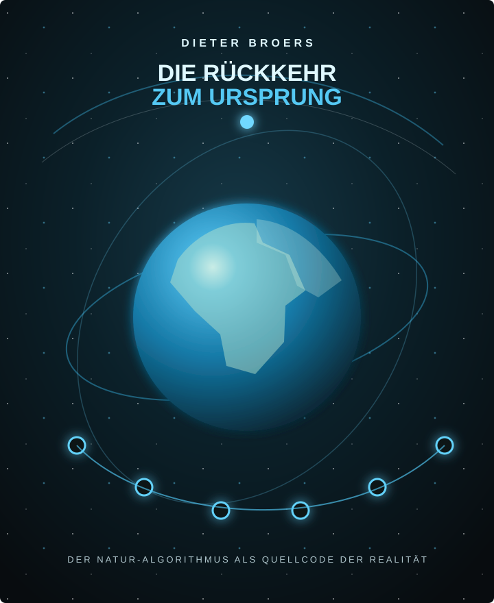

Rückkehr zum Ursprung – mit Führung
38:41
Die vollständige Klangreise mit Dieter Broers’ Sprechstimme und der musikalisch-räumlichen Führung durch alle sechs Stationen.
Audio-Übergabe & redaktionelle Arbeitsgrundlage
Diese Seite stellt die aktuellen Audiodateien bereit und zeigt zugleich, wie die Inhalte des Booklets kompakt, bildhaft und in einer ruhigen Sprache für die spätere Produktseite aufbereitet werden könnten.
Editorialer Bezug: Booklet-Text von Dieter Broers, Redaktion Vera Brandes. Die endgültige Produktdarstellung bleibt der Abstimmung durch Dieter und Vera vorbehalten.

Grafische Studie · nicht das finale CoverAudio Delivery
Die Links in diesem Abschnitt dienen ausschließlich der Prüfung, Freigabe und technischen Weitergabe. Sie gehören nicht in eine öffentliche Produktseite.
Die vollständige Klangreise mit Dieter Broers’ Sprechstimme und der musikalisch-räumlichen Führung durch alle sechs Stationen.
Die reine Musik- und Resonanzfassung ohne Sprechstimme. Die sechs Phasen und ihre zeitliche Dramaturgie bleiben erhalten.
Eine geführte Klangreise von Dieter Broers
Der Natur-Algorithmus als QUELLCODE der Realität
Diese Klangreise führt nicht fort von der Welt, sondern tiefer in die Beziehung mit ihr hinein. Dieter Broers begleitet Dich durch sechs innere Stationen: von der Ablösung aus dem gewohnten Wahrnehmungsraum über den Ursprungsraum, den Blick auf Mutter Erde und das Erwachen der Menschheit bis zu Vereinigung, Urklang und Verkörperung.
Musik, Stimme, Waldklänge und behutsam eingebettete Resonanzstrukturen bilden dafür einen zusammenhängenden akustischen Raum. Die Technik steht dabei nicht im Vordergrund. Entscheidend ist die Begegnung zwischen dem Klang und dem Menschen, der hört.
Es geht nicht um das Erzwingen eines Zustandes, sondern um das Ermöglichen von Resonanz.
Die Rückkehr zum Ursprung
Wenn wir die Natur aufmerksam betrachten, begegnet uns überall eine Ordnung, die sich auf immer neuen Ebenen wiederholt: in Formen, Verzweigungen, Rhythmen, Schwingungen und Proportionen. Diese Ordnung ist nicht starr. Sie reagiert, passt sich an und bringt aus einfachen Grundprinzipien eine nahezu unerschöpfliche Vielfalt hervor.
Der Begriff Natur-Algorithmus ist dafür ein Bild. Er bezeichnet keinen unsichtbaren Computer und keinen festgelegten Ablaufplan, sondern eine tiefere Ordnungsstruktur, aus der Formen, Rhythmen, Beziehungen und Entwicklungsprozesse hervorgehen.
Er ist nicht allein eine Ordnung der Form. Er ist zugleich eine Ordnung der Beziehungen.
Der Urklang ist kein einzelner geheimnisvoller Ton. Er steht für eine ursprüngliche Stimmigkeit von Schwingung und Beziehung.
Die innere Bewegung
Die Reise löst sich zunächst vom äußeren Wahrnehmungsraum. Sie öffnet den Blick auf Ursprung, Erde und Menschheit – und führt das Erfahrene schließlich zurück in Körper, Materie und konkretes Leben.
Der Atem wird ruhig. Das äußere Geschehen tritt zurück; die Aufmerksamkeit sammelt sich im eigenen Inneren.
Die Reise überschreitet die Schwelle zur Quelle allen Seins. Aus äußerer Bewegung wird innere Weite.
Aus dem Quellraum erscheint die Erde in ihrer Schönheit: Meere, Kontinente, Berge und Wälder, umgeben von Licht und Klang.
Menschen und Tiere unterbrechen ihren gewohnten Rhythmus. Sie blicken auf und erkennen, dass etwas Großes geschieht.
Die Menschen erkennen einander als Angehörige einer großen Familie. Aus einzelnen Klängen entsteht ein gemeinsamer Akkord.
Die kosmische Weite kehrt in Körper und Materie zurück. Das Erfahrene wird in das konkrete Leben getragen.
Musik · Stimme · Naturklänge · Resonanzstrukturen
Simon Fox hat die Musik eigens für diese Reise aus realen Audio-Loops gestaltet. Instrumentale Drones, menschliche Stimmen und Klänge analoger Synthesizer verbinden sich mit akustischen Aufnahmen von Wind in einem Wald zu einer kontinuierlichen Klanglandschaft.
Die Frequenzbeziehungen sind nicht als getrennte technische Signale gedacht, die einen Zustand vorgeben. Sie sind in die musikalische Bewegung eingebettet, verändern sich mit ihr und bleiben Teil eines organischen Gesamtklanges.
Die 8 Hz liegen nicht als eigener tiefer Ton im Audiomaterial vor. Sie ergeben sich beim stereo getrennten Hören aus der Differenz zweier hörbarer Trägerfrequenzen. Diese sinken im Verlauf der Reise allmählich ab und fügen sich harmonisch in die Musik ein.
Zusätzlich ist ein 40-Hertz-Signal eingebettet, dessen Amplitude mit acht Hertz moduliert wird.
Beziehung statt Gleichförmigkeit
Der gemeinsame Akkord ist kein fertiger Akkord, der irgendwo bereits existiert. Er entsteht in Beziehung. Harmonie bedeutet dabei nicht, dass alles gleich werden muss. Wie in einem musikalischen Akkord behalten die einzelnen Stimmen ihre Eigenart – und können gerade deshalb gemeinsam etwas hervorbringen, das keine von ihnen allein erschaffen könnte.
Denken · Fühlen · Sein
Entscheidend ist nicht der Gedanke allein, sondern der Bewusstseinszustand, aus dem heraus wir denken, fühlen und handeln. Erst wenn Denken, Fühlen und Sein stärker miteinander in Einklang kommen, entsteht jene innere Kohärenz, um die es in dieser Reise geht.
Die Rückkehr zum Ursprung
Die Rückkehr zum Ursprung ist keine Reise in eine idealisierte Vergangenheit und keine Flucht aus der materiellen Welt. Die Dramaturgie führt am Ende bewusst zurück in die Verkörperung. Was erfahren wurde, soll in den Körper und damit in das konkrete Leben zurückkehren.
Die eigentliche Frage lautet deshalb nicht, welchen besonderen Zustand wir während des Hörens erreicht haben. Entscheidend ist, was wir daraus mitnehmen: Verändert sich die Qualität unserer Aufmerksamkeit? Werden Liebe, Dankbarkeit, Verantwortung und Frieden zu etwas, das wir im eigenen Leben verkörpern?
Die Rückkehr zum Ursprung ist letztlich keine Bewegung fort von dieser Welt. Sie ist eine Bewegung tiefer in sie hinein.
Die Klangreise erscheint in zwei Fassungen
Beide Fassungen folgen derselben inneren Dramaturgie. Die geführte Version verbindet Klang und innere Ausrichtung mit dem gesprochenen Wort; die offene Fassung lässt mehr Raum für die eigenen Wahrnehmungen.
Redaktioneller Prüfpunkt vor Veröffentlichung: Nach Abschluss der Lizenzvereinbarung lautet der vorgesehene Credit: „Enthält lizenzierte Klänge von: Stéphane Pigeon“.
Separater Textbaustein für die Produktseite
Dieser kürzere Text kann unabhängig von der ausführlichen Darstellung als Produktbeschreibung oder Shop-Teaser übernommen werden.
Eine geführte Klangreise von Dieter Broers
„Die Rückkehr zum Ursprung“ führt Dich durch sechs innere Stationen: von der Ablösung aus dem gewohnten Wahrnehmungsraum über den Ursprungsraum, den Blick auf Mutter Erde und das Erwachen der Menschheit bis zu Vereinigung, Urklang und Verkörperung.
Dieter Broers’ Stimme verbindet sich mit einer eigens für diese Reise gestalteten Klanglandschaft aus instrumentalen Drones, menschlichen Stimmen, analogen Synthesizerklängen und Aufnahmen von Wind in einem Wald. Ein tief eingebettetes Fractal-Noise-Resonanzsignal sowie organisch in die Musik integrierte Frequenzbeziehungen bilden weitere Ebenen der Klangarchitektur.
Dabei geht es nicht darum, einen bestimmten Zustand zu erzwingen. Die Klangreise öffnet einen Raum, in dem Aufmerksamkeit, Empfindung und innere Ausrichtung ihre eigene Form von Resonanz entwickeln können. Ihre letzte Bewegung führt bewusst zurück in Körper und Alltag: Die Rückkehr zum Ursprung ist keine Bewegung fort von dieser Welt, sondern tiefer in sie hinein.